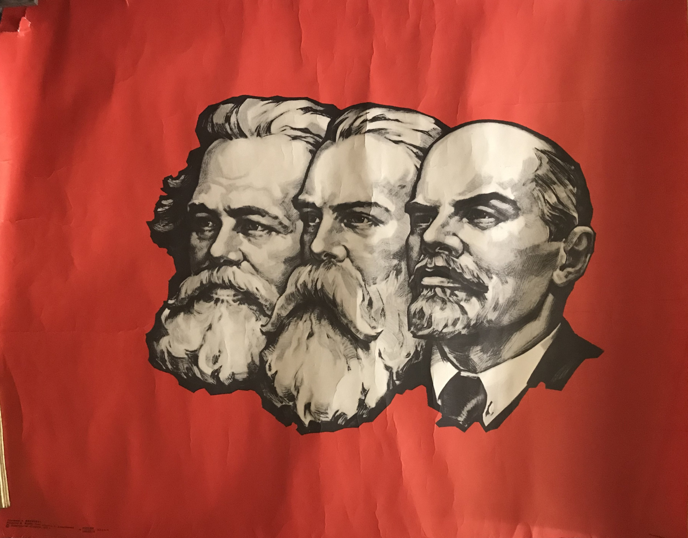

La clausura metodológica y la homeostasis estructural del capital: crítica materialista a la escuela de Íñigo Carrera
Existe en el marxismo contemporáneo una corriente que se presenta a sí misma como la única lectura verdaderamente científica de El Capital. Su pretensión de pureza metodológica termina, paradójicamente, dejando a Marx fuera del juego.

"La maquinaria es un medio para producir plusvalía"
I. Introducción: el problema de la pureza en tiempos de reflujo
Existe en el marxismo contemporáneo una corriente que se presenta a sí misma como la única lectura verdaderamente científica de El Capital. Su premisa fundacional es simple y seductora: no se trata de aplicar conceptos externos a la realidad, sino de dejar que las categorías de Marx se desplieguen orgánicamente, de lo abstracto a lo concreto, sin añadir nada que no emane del propio movimiento inmanente de la forma-valor. La realidad, se nos dice, debe explicarse a sí misma mediante la dialéctica interna del capital, y toda introducción de categorías provenientes de la sociología, la ciencia política, los estudios culturales o la teoría de la dependencia, etc. constituye una recaída en el pensamiento burgués.
Esta pretensión de pureza metodológica, defendida con rigor filológico y densidad filosófica por autores como el argentino Juan Íñigo Carrera y el Centro de Investigación como Crítica Práctica (CICP), ha seducido a generaciones de jóvenes intelectuales. La promesa es tentadora: un marxismo puro, autosuficiente, que no necesita recurrir a conceptos "contaminados" para explicar el capitalismo.
Sin embargo al someter esta operación teórica al examen del propio materialismo histórico y la dialéctica materialista, emerge un problema de fondo que no es menor ni secundario: la escuela de Íñigo Carrera opera, en los hechos, una clausura del sistema teórico que reproduce, en el plano del pensamiento, la misma estructura fetichista que Marx se propuso desmontar. Lo que se presenta como el retorno más fiel a Marx termina, paradójicamente, dejando a Marx fuera del juego.
Pero este afán de pureza, lógico conceptual, no es el primero que se ha intentado. Limpiar la obra de Marx de elementos morales, románticos o estrictamente filosóficos para elevarla al rango de ciencia rigurosa, fue uno de los debates más intensos de la segunda mitad del siglo XX.
Uno de sus máximos exponentes, que obnubiló a importantes sectores de izquierda mundial antiestalinista, fue el Marxismo Estructuralista de Louis Althusser, desarrollado junto a sus alumnos como Étienne Balibar, Marta Harnecker y Nicos Poulantzas. Para efectos de esta crítica nos centraremos en la tesis althusseriana sobre el Antihumanismo Teórico, esbozadas en sus textos: La revolución teórica de Marx (1965) y Para leer El Capital. Allí Althusser nos indica que las explicaciones burguesas e ideológicas de la sociedad siempre parten del sujeto: la sociedad funciona porque hay individuos libres que toman decisiones, compran, venden o firman contratos.
Althusser da vuelta esta lógica argumentando que Marx demostró que la historia es un "proceso sin sujeto ni fines". Lo que verdaderamente explica el funcionamiento de una sociedad no son las intenciones de los hombres, sino las relaciones de producción y las estructuras objetivas en las que esos hombres nacen y son colocados. Más adelante nos referiremos al entronque con las ideas de Íñigo Carrera.
Sin embargo un par de años antes, en 1960 había surgido La Nueva Lectura de Marx (Neue Marx-Lektüre), escuela que en su momento no llegó a tener la relevancia de Althusser, encarnada en pensadores como Hans-Georg Backhaus y Helmut Reichelt alumnos de Theodor Adorno, y Michael Heinrich por ejemplo. La Nueva Lectura de Marx, más que reaccionar contra el estalinismo epocal, lo hacía directamente contra las concepciones marxistas-leninistas que aún se extendía hacia los partidos comunistas y revolucionarios a través de la academia rusa. Estos autores también se propusieron analizar la estructura lógica y estrictamente científica de la crítica de la economía política de Marx. Su enfoque se centró de forma casi matemática en las categorías analíticas de El Capital: la forma-mercancía, la forma-valor y el carácter fetiche del dinero.
A finales de los 70, en medio de lo que se dio en llamar posmodernidad, surgió la escuela de el Marxismo Analítico (La "Escuela de Septiembre"). Cuyos máximos exponentes John Roemer, Jon Elster y G.A. Cohen buscaron dotar al marxismo de la máxima rigurosidad científica utilizando las herramientas de la filosofía analítica contemporánea y de la ciencia económica convencional.
II. La epoché metodológica: clausura operacional y solipsismo del valor
Para comprender la operación teórica de Íñigo Carrera, resulta ilustrativo parangonarla, sin detenernos a explicitarlas, con dos tradiciones filosóficas que, aunque distantes en su origen, comparten una estructura metodológica común: la fenomenología trascendental de Husserl y la biología del conocimiento de Maturana. Husserl propuso la epoché o "puesta entre paréntesis" de la realidad natural para concentrarse en el análisis puro de las estructuras de la conciencia. Maturana, por su parte, desarrolló el concepto de autopoiesis y la clausura operacional, sobre las bases idealistas de Husserl: los sistemas vivos se organizan de tal modo que toda referencia al entorno queda internalizada en los propios mecanismos del sistema.
La escuela de Íñigo Carrera opera una epoché análoga sobre el propio texto de El Capital. Todo lo que no emane del despliegue inmanente de las formas del valor ---la lucha de clases concreta, la geopolítica del imperialismo, la dependencia estructural del Tercer Mundo, las mutaciones de la subjetividad productiva, toda la superestructura político-ideológica, etc.--- queda puesto entre paréntesis, en este caso expulsados heurísticamente como "contaminación burguesa". El sistema teórico se vuelve autorreferencial: las categorías se explican entre sí, el capital se despliega a sí mismo, y la realidad material concreta queda reducida a una mera ilustración o a un dato empírico sin peso teórico propio.
Esta clausura metodológica tiene una consecuencia: el texto de Marx, que fue escrito como herramienta para la transformación revolucionaria de la realidad, queda fetichizado. Se convierte en un sistema lógico autosuficiente cuyo movimiento interno es el verdadero objeto de estudio, mientras la realidad histórica concreta --- con sus contradicciones sangrientas, sus saqueos imperiales y sus luchas de clases --- queda suspendida. Es la reproducción, en el plano de la teoría marxista, de la misma estructura fetichista que Marx denunció en la mercancía: las relaciones sociales entre personas aparecen ahora como relaciones entre conceptos.
III. El fideísmo categorial, el antihumanismo extremo y la ausencia de praxis
La clausura metodológica descrita produce lo que, en términos del marxismo-leninismo, debe calificarse como solipsismo teórico y fideísmo categorial. El solipsismo consiste en la creencia de que solo existe el propio pensamiento y sus contenidos; el fideísmo consiste en la adhesión a ciertas verdades por acto de fe, sin mediación de la práctica material ni de la verificación histórica. La escuela de Íñigo Carrera incurre en ambas operaciones. Al sostener que la totalidad de la realidad social puede deducirse del despliegue lógico de la forma-valor, se afirma un solipsismo categorial. Creer que esta deducción es la única forma "verdaderamente científica" de conocer el capitalismo, afirma un fideísmo en la infalibilidad del sistema categorial.
Esta clausura determinista revela una dimensión aún más extrema que el antihumanismo estructural de Louis Althusser. Aunque ambos operan por vías opuestas (Althusser disuelve al sujeto en la estructura; Íñigo hipostatiza la estructura en un Sujeto metafísico), ambos convergen en el mismo resultado político: la anulación de la praxis humana histórica. Para Althusser, la historia es un proceso sin sujeto; para Íñigo, la historia es el autodespliegue del Sujeto-Valor. En ambos casos, el ser humano concreto queda reducido a un mero Träger (portador) o a una función matemática, eliminando la posibilidad de la intervención revolucionaria consciente.
La "fe" de esta corriente se manifiesta de manera palmatoria en la absoluta ausencia de una vía concreta para el surgimiento de la conciencia revolucionaria. Para ellos, la emancipación no nace de la praxis, de la organización política, de la construcción de hegemonía o de la lucha de clases, sino de un acto casi místico: leer y entender teórica y subjetivamente la situación de dominación que se vive. Es una gnosis académica que sustituye la acción política por la contemplación del fetiche, condenando a la clase trabajadora a la espera pasiva de que el capital, por su propia contradicción lógica inmanente, colapse por sí solo.
Esta omisión no es accidental, sino una necesidad estructural de su método. Para que la relación de explotación se reproduzca de manera efectiva, el capital no puede limitarse a la extracción de plusvalía en la esfera productiva; requiere la mediación activa de la superestructura (el Estado de derecho, la educación formal, la cultura de masas y la subsunción del consumo). Si el análisis se limita a la forma material del trabajo, no puede explicar por qué la clase trabajadora se somete "voluntariamente" o por qué el profesional precarizado se cree "sujeto" cuando solo opera una maquinaria que no controla. Sin esta mediación superestructural, la alienación no se reproduce de forma efectiva.
Al extirpar este componente político y cultural bajo el argumento de que "todo es un despliegue automático del valor", Íñigo Carrera vacía de contenido la subsunción real. Si la alienación fuera un problema puramente "teórico" que el proletario puede resolver mediante el "descubrimiento" intelectual de su condición, Marx habría sido un filósofo iluminista de la razón, no un revolucionario materialista. Sin embargo Marx nos legó esta frase, en su texto Contribución a la crítica de la filosofía del derecho de Hegel (1844):
"La fuerza material no puede ser derrocada sino por la fuerza material; pero la teoría también se convierte en fuerza material tan pronto como prende en las masas."
La tesis de que la subjetividad y las ideas, al encarnar en las masas, adquieren fuerza material es uno de los pilares del materialismo histórico de Karl Marx. Esta idea derriba la dicotomía mecánica entre "infraestructura económica pura" y "superestructura espiritual ideal". Marx no era un materialista vulgar que reducía todo a átomos, máquinas o ecuaciones matemáticas de valor; era un materialista dialéctico para quien la conciencia humana es parte constitutiva de la realidad material.
IV. La homeostasis estructural del capital: una alternativa materialista
Para desarmar esta postura sin caer en el voluntarismo ingenuo, es imperativo introducir una mirada que la escuela de Íñigo Carrera no puede ver (ya sea por falta de buena fe, incomprensión teórica o conveniencia ideológica): La homeostasis estructural del capital, tal como se desarrolla en el texto "Lenin: La persistencia del materialismo dialéctico. Homeostasis estructural del capital" [1].
Allí se despliega la idea de el capitalismo contemporáneo, aun considerando las analogías organicistas del propio Marx, no es un "sujeto vivo autónomo", ni un Dios con voluntad propia, sino una estructura que ha desarrollado mecanismos autorregulados, algorítmicos, aparentemente automáticos en el sentido en que Gramsci teorizaba la idea del capitalismo como "Realidad Rebelde", para absorber, neutralizar y procesar las crisis y disidencias, manteniendo su estabilidad a nivel sistémico. El capital no colapsa por una contradicción lógica pura; se defiende. Sus sensores y efectores (algoritmos predictivos, blindajes jurídicos, patentes biotecnológicas, control biométrico, renta financiera, tratados de libre comercio, la Mass Media, etc) mutan constantemente para contener la presión de la lucha de clases y la resistencia de los pueblos.
Esta perspectiva permite articular tres ejes centrales que desmontan la parálisis escolástica:
- Homeostasis estructural del capital: El estudio de las herramientas homeostáticas del capital nos indica que su potencia posee límites mensurables. La estabilidad no es ausencia de cambio, sino "acumulación contenida" bajo presión, precisamente por todos los elementos que la escuela iñiguista desecha. Esa presión proviene de los cuerpos explotados, de los territorios saqueados y de las contradicciones materiales que el sistema no puede resolver del todo, obligándolo a reconfigurarse constantemente.
- Derrota hegemónica, no gnoseológica: La marginación del materialismo dialéctico en Occidente no se debió a fallas científicas u ontológicas, como pretenden sus detractores, sino a una derrota hegemónica: el idealismo subjetivo y el positivismo que combatió Lenin, se impusieron cultural y económicamente, neutralizando la praxis revolucionaria y disfrazando la dominación de clase bajo la apariencia de "leyes naturales" del mercado.
- Persistencia dialéctica: Frente a la parálisis de los grupos de estudio cerrados, el materialismo dialéctico sigue vivo y resistiendo a través de la militancia concreta, la biología dialéctica, la ciencia disidente y en los modelos de desarrollo que desafían la hegemonía occidental, demostrando que existen vías de desarrollo que no se pliegan automáticamente a la lógica del capital financiero global.
V. El moralismo hegeliano, el racismo geopolítico y la ceguera ante el mega-capital
Esta ceguera teórica se vuelve vil, cuando se aplica al análisis de las formaciones sociales periféricas y dependientes. Al sostener que el capital es una relación social global que se despliega de manera homogénea, esta corriente borra sistemáticamente la realidad del imperialismo, la dependencia estructural y la superexplotación del trabajo en el Tercer Mundo. Para ellos, no existen países oprimidos y países opresores; existe el capital social global y sus determinaciones lógicas.
Aquí reside un peligro ideológico grave y la idea de un racismo geopolítico encubierto. Al explicar las dinámicas de la Nueva División Internacional del Trabajo (NDIT) o las Cadenas Globales de Valor (CGV) únicamente a través de abstracciones como "diferenciación cualitativa de capitales" o "atributos productivos", la escuela iñiguista deja la puerta abierta a la interpretación de que los trabajadores del Tercer Mundo son, por naturaleza o cultura, menos capaces, menos intelectuales o más propensos a la "disciplinación" que los del Primer Mundo.
Lo que se niega a explicitar, por conveniencia teórica, es la causa material e intencionada de esta situación: el capital global mantiene deliberadamente a las poblaciones del tercer mundo en la precarización, la ignorancia forzada y la superexplotación para garantizar el flujo ininterrumpido de materias primas y valores de uso baratos. No es una "cualidad" del trabajador periférico; es el resultado de una violencia geopolítica planificada.
Esta operación teórica tiene un contenido material que no puede ser soslayado. Cuando la escuela de Íñigo Carrera analiza la acumulación de capital en Argentina, lo hace desde la abstracción lógica de la renta diferencial, sin confrontarse con la realidad concreta de un país que, por ejemplo, exporta al mundo los mejores cortes de carne vacuna, mientras sus trabajadores, hoy bajo el gobierno libertario del ultraderechista Javier Milei, fueron invitados ante la pérdida total de poder adquisitivo, oficialmente a "comer carne de burro", en cadena nacional, evidenciando la brutal transferencia de valor y el saqueo de los recursos nacionales.
Del mismo modo, cuando se habla de la inserción de Chile o América Latina en el mercado mundial, se podría recurrir a la abstracción de la "formación de la tasa general de ganancia" y a la falacia de que en la periferia solo operan "pequeños capitales" o capitales "especiales" con lógicas atrasadas. Sin confrontarse también, con la realidad de un país que exporta concentrado de cobre ---barro con mineral, sin refinar--- mientras su población sufre la devastación ambiental de las zonas de sacrificio y la precarización y proletarización creciente absoluta de su fuerza de trabajo.
Aspectos de esta narrativa se desmoronan ante la evidencia material: gigantes del capital de inversión como BlackRock están presentes y apropiándose de todos los valores de uso posibles a su paso en el Tercer Mundo, incluyendo hoy el valor de uso cognitivo-biológico (datos, patentes genéticas, recursos naturales estratégicos). No se trata de "pequeños capitales" rezagados; se trata de la punta de lanza del capital financiero global extrayendo plusvalor de la periferia con una eficiencia brutal.
VI. El sobreintelectualismo como salida psicológica de un pensamiento derrotado
La pretensión de pureza metodológica conduce inevitablemente a un sobreintelectualismo que ignora la geografía real de la explotación. Análogamente, conceptos importados del Primer Mundo, como la "autoexplotación" descrita por autores como Byung-Chul Han, presuponen un sujeto hiperindividualista que solo existe en ciertos círculos académicos o laborales de élite. En el Tercer Mundo, la realidad es radicalmente distinta: el trabajador de una maquila, el recolector de fruta o el repartidor de aplicaciones no se "autoexplota" por una crisis de ego o por un exceso de optimismo existencial. Lo hace porque existe una coacción material directa y descarnada: si no trabaja jornadas extenuantes bajo el mando de un algoritmo o un capataz, su familia no come. No hay espacio gnoseológico para la sutileza de la "autoexplotación" cuando lo que opera es la disciplina del hambre.
Este sobreintelectualismo no es casual; cumple una función homeostática precisa. Puede abordarse relacionándolo con ciertas derivas de la Escuela de Frankfurt o con el irracionalismo del siglo XIX: es el pensamiento derrotado que, al no encontrar una salida práctica en la praxis revolucionaria, se refugia en una construcción teórica elitista que le otorga una salida psicológica. Una especie de "Marxismo Zen" - al estilo de Filosofía Integral, la Psicología Transpersonal, Existencial, Fenomenológica o de Tradiciones Espirituales y Místicas Occidentales y Orientales. Incluso de algunas ideas esotéricas surgidas de la Física Cuántica - que buscan una "conciencia total" secularizada, esta corriente ofrece a sus seguidores la paz mental del cínico: la ilusión de que, al comprender perfectamente las leyes abstractas del capital en un pizarrón, se ha trascendido la realidad.
Es en general, una militancia de cubículo que sustituye la acción por la contemplación. El sistema no necesita refutar esta corriente; le basta con dejarla encerrada en su propia pureza. Una izquierda que se pasa el tiempo discutiendo si la soja en Argentina es renta diferencial tipo I o tipo II, mientras las corporaciones transnacionales operan con total impunidad en el territorio real, es una izquierda funcional a la homeostasis estructural del capital.
VII. La filosofía de la praxis como alternativa
Frente a esta escolástica, existe una tradición marxista que siempre entendió que la teoría no es un sistema cerrado, sino una herramienta abierta, histórica, que debe ser actualizada en el contacto con la realidad concreta. Es la tradición de la filosofía de la praxis, que tiene, precisamente en Marx, su creador y máximo exponente, luego en Engels, Antonio Labriola, Vladímir Ilich Ulianov, Antonio Gramsci y George Lukács.
Marx nunca pretendió crear un sistema filosófico cerrado; su método es histórico-crítico.
Antonio Labriola desarrolló el concepto de "filosofía de la praxis" precisamente para combatir el dogmatismo de la Segunda Internacional. Para Labriola, el materialismo histórico no era una teoría que explicara el movimiento social desde fuera, sino un método que debía ser aplicado desde dentro de la práctica histórica concreta.
Antonio Gramsci llevó esto al extremo. Si nos quedamos solo con la economía pura, no podemos explicar por qué la gente actúa en contra de sus propios intereses materiales. Por eso incorporó conceptos como la cultura, el sentido común, los intelectuales orgánicos y la hegemonía para formular una teoría que diera cuenta de la complejidad real de la dominación capitalista. Gramsci no "contaminó" el marxismo; lo enriqueció con conceptos necesarios para entender por qué el capitalismo no colapsa a pesar de sus contradicciones objetivas, y cómo se puede construir un bloque histórico alternativo.
VIII. Conclusión estratégica: las tareas de la izquierda revolucionaria
La crítica desarrollada en estas páginas no "busca descalificar" porque sí, el esfuerzo filológico de la escuela de Íñigo Carrera, pensamos que ha contribuido a mantener viva la discusión sobre las categorías fundamentales de la crítica de la economía política en un contexto académico hostil, paradójicamente para los demás, no así para sus ideas. Sin embargo la clausura metodológica que esta escuela realiza sobre el texto de Marx tiene consecuencias teóricas y políticas, como ya lo hemos explicitado. En ese sentido nuestra crítica, se trata de una crítica per se.
En resumen, teóricamente, la pretensión de pureza de la escuela de Íñigo Carrera, conduce a un solipsismo categorial que es incapaz de explicar los fenómenos concretos del capitalismo contemporáneo: el imperialismo como sistema de dominación geopolítica, o si se quiere la financiarización de la economía, la dependencia estructural del Tercer Mundo, las mutaciones de la subjetividad productiva en la era digital y la crisis ecológica global. Políticamente, la clausura metodológica conduce a un elitismo que desarma a la clase trabajadora, condenándola a la espera pasiva de que el desarrollo de las fuerzas productivas la libere, borrando la necesidad de la organización política, de la construcción del partido de nuevo tipo y de la construcción de hegemonía.
Las tareas de la izquierda revolucionaria en el contexto actual exigen exactamente lo contrario: una teoría abierta, concreta, que se enriquezca en el contacto con la realidad. Esto significa recuperar la totalidad concreta del análisis marxista, que incluye no solo las categorías fundamentales de la crítica de la economía política, sino también las teorías históricas del imperialismo, la cuestión nacional, la teoría de la dependencia y el análisis de la hegemonía, etc. Etc. Recuperar particularmente, el leninismo como herramienta teórica y política para la intervención concreta en la realidad. Finalmente, recuperar la praxis como criterio de verdad, no como una lógica escolástica.
La escuela de Íñigo Carrera, en su afán de depurar el marxismo de toda contaminación, ha terminado por convertir a Marx en una teoría más. Sus ideas, que pretenden ser la más fiel interpretación de El Capital, es en realidad la que menos puede explicar la realidad concreta del capitalismo contemporáneo y la que menos puede contribuir a su superación revolucionaria. La tarea de la izquierda revolucionaria es, entre tanto quehacer, por lo tanto, superar esta clausura metodológica y recuperar la riqueza, la complejidad y la potencia transformadora del marxismo como teoría y como práctica. En el fondo Íñigo Carrera desarrolla una revisión de las ideas de Marx cubiertas de un manto escolástico, cuya idea central es la inversión de una de los aspectos principales de la crítica de la economía política elaborada por Marx:
"El móvil y la fuerza motriz de la producción capitalista [...] es la autovalorización del capital, la producción de plusvalía, la extracción de plustrabajo no pagado. [...] La maquinaria, considerada como el medio más eficaz de aumentar la productividad del trabajo, es decir, de abaratar las mercancías, se convierte, en manos del capital, en el medio más eficaz para prolongar la jornada de trabajo más allá de todo límite natural."
No el desarrollo de las Fuerzas Productivas del capital.
Entonces, como escribió Antonio Gramsci, "la realidad es rica en caminos y extraños recovecos". Y nuestra teoría debe ser igual de rica, igual de compleja, igual de abierta a los recovecos de la realidad. De lo contrario, no seremos capaces de entender el mundo, y mucho menos de transformarlo.
[1] Zieballe, John, "Lenin: La persistencia del materialismo dialéctico. Homeostasis estructural del capital."